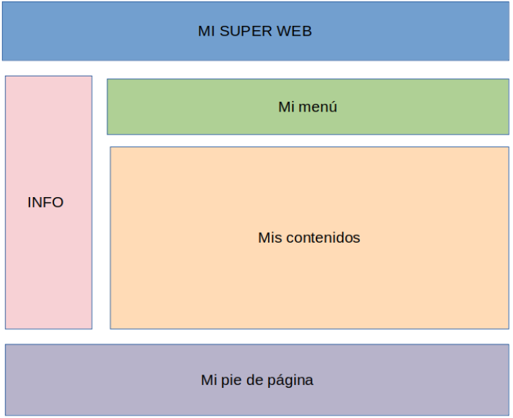

HTML en 5 minutos (o cómo aprender a programar esqueletos mutantes)
Versión web
¿Qué es HTML?
HTML, son las siglas de Hypertext Markup Language... pero si estás leyendo esto, segúramente no te diga nada. Para el común de los mortales, HTML es el lenguaje básico en el que se escriben la mayoría de las páginas web del mundo.
Si lo comparáramos con el cuerpo humano, sería el esqueleto: aquello que sustenta y da forma a nuestra creación. En él aparecerán la mayoría (si no todos) de los contenidos que queramos hacer aparecer en nuestra web. Interesante, ¿verdad?
¿Qué necesito para empezar a aprender?
El bloc de notas.
...
Sí, has leído bien. No te hace falta nada más, aunque puede que agradezcas un poco de color en tu código. Para ello notepad++ es una gran opción. Si usas Linux (high five!) tu editor por defecto ya te dará los colorines sin hacer nada.
Siendo sinceros también necesitarás un navegador web (Yo uso Firefox, pero escoge el que más te guste). Es un poco de cajón si vamos a aprender a hacer una web, pero nunca se sabe.
Cómo escribir algo en HTML
HTML utiliza etiquetas (o marcas) para distinguir lo que son “huesos” de nuestro esqueleto del relleno del mismo. Dichas marcas son los símbolos mayor y menor que (<>). Todo texto que esté metido dentro de estos símbolos se interpretará como un hueso, pero claro, todo hueso tiene un inicio y un final, y para marcar esto último se usa “\”. Por último, se coloca el contenido entre el inicio y el final. Un ejemplo sería:
<hueso>El contenido de mi hueso <\hueso>
Estructura del HTML
Probablemente a estas alturas te estés preguntando qué me ha dado con los huesos y por qué los he escogido para esta metáfora tan “osEada” (mi libro, mis chistes). Pues bien, la clave está en que todos ( y cuando digo todos es todos) los archivos HTML siguen esta estructura:
<!DOCTYPE html> <HTML> <head>contenido de la cabecera <\head> <body>contenido del cuerpo <\body> <\HTML>
Al igual que los esqueletos, HTML dispone de una cabeza y de un cuerpo que están formados por numerosos huesecillos. Cada uno tiene sus normas y peculiaridades... y eso es lo que pasaremos a comentar a continuación.
La cabecera (Head)
A no ser que seáis un poco guarretes, la cabeza es lo primero que véis de una persona. Con el HTML pasa lo mismo. Aquí va la información que sentará las bases de todo el body del archivo.
Como todo en la vida, puede ser todo lo complicado que quieras, pero yo siempre he sido partidario del Keep it simple (Mantenlo simple), por lo que aquí te dejo los 3-4 “huesos” que se suelen utilizar. Como he mostrado antes, habrá que fijar el inicio y el fin del mismo para que la web se vea correctamente.
- <title>: Nos permite dar el nombre a nuestra web que se verá en la pestaña de nuestro navegador.
- <meta charset=“utf8”>: fija sistema de caracteres a UTF8 (útil para los acentos típicos del castellano).
- <link rel=“stylesheet” href=“RutaDelFicheroCSS”>: Establece la hoja de estilo (CSS) que usará la web. (Lo explicaremos en otro episodio).
- <link rel=“shortcut icon” type=“image/png” href=“RutaImagen”>: Pone el iconito que queramos en la pestaña del navegador.
Con esto, tendríamos el 99% de las cabeceras existentes. Se pueden añadir millones de posibilidades más, pero se escapa del objeto de este documento. Internet es una fuente de saber. ¡Úsala!
El cuerpo (Body)
Aquí aparecen nuestros textos, imágenes, enlaces, menús, vídeos... en definitiva, la página web en sí misma. Por ello, esta parte es la más extensa y la más importante. De ella dependerá lo que el resto de personas vayan a ver.
Buenas conductas para tener un buen “body”
Como para todo en la vida, conviene saber organizarse. Cuando hacemos una mudanza guardamos nuestras cosas en cajas y cada una tiene una cosas de un estilo; en la cocina separamos los cubiertos de los platos; el cuerpo humano lo solemos dividir en cabeza, tronco, brazos, pies... pues con las páginas web pasa un poco lo mismo.
Antes de empezar a escribir como locos, conviene invertir un poco de tiempo en pensar la estructura que queremos que tenga nuestra página. Un caso típico podría ser la figura.

En este ejemplo tenemos una cabecera con el logo, un menú, una sección lateral con información rápida, el contenido que queremos meter y un pie de página con más información.
De esta manera, parece lógico pensar que tenemos cinco bloques de información. En HTML estos bloques se pueden separar mediante la etiqueta div. A continución se muestra un ejemplo de uso.
<div id=“identificador del bloque”>Contenido del bloque <\div>
El elemento id es un atributo. Éste en concreto permite darle un nombre con el que luego poder aplicarle cosas extra mediante la hoja de estilo (CSS). Más adelante se explicarán más usos de los atributos, pero por el momento nos basta con saber que existen.
Programar páginas web mediante bloques es el mejor consejo que puedo dar en este libreto. Puede parecer un poco pesado, pero vuestro yo del futuro os lo agradecerá. Creedme.
Cómo rellenar los bloques
Ya hemos dividido la web en varios bloques. Ahora lo que toca es...¡Escribir!
Parece demasiado simple para ser cierto, y tenéis razón. Escribir contenidos en HTML no es tan sencillo como escribir un word. Necesitaremos usar varias etiquetas para fijar ciertos formatos, insertar imágenes, enlaces y otras cositas chulas. Estas etiquetas siguen la estructura vista en el apartado 3 así que nunca es tarde para volver a echarle un vistazo.
Al final, opciones hay muchas y esto dejaría de ser útil si recogiera todas. Sólo vosotros sabéis que necesitáis en cada momento. No obstante, aquí dejo una pequeña (no tan pequeña) selección con las principales etiquetas que suele usar la mayoría de la gente y para qué sirven.
Lista de etiquetas más habituales
- <p>contenido <\p>: Crea un párrafo de texto.
- <b>contenido <\b>: Texto en negrita
- <i>contenido <\i>: Texto en cursiva
- <ul>contenido <\ul>: Comienza una lista sin numerar
- <ol>contenido <\ol>: Comienza una lista numerada
- <li>contenido <\li>: Añade un nuevo elemento a una lista (numerada o sin numerar)
- <a href=“enlace”>contenido <\a>: Añade un enlace a un archivo u otra web.
- <img src=“ruta de la imagen”>contenido <\img>: Añade una imagen
- /<table>contenido <\table>: Crea una tabla (aunque mejor usa div).
- <h1>, <h2>... contenido <\h1>, <\h2>: Crea títulos y encabezados
- <div>contenido <\div>: Crea un bloque (ya le conocemos de antes).
- <br />: Introduce un salto de línea.
Como se ha comentado antes, la lista podría ser muy larga. Si buscas algo concreto que no aparezca en esta lista, te recomiendo que hagas una consulta rápida en tu buscador favorito y encontrarás lo que necesites.
Atributos
Los atributos son elementos que se colocan dentro de cada etiqueta para añadirle alguna funcionalidad añadida. Las opciones son muchas: el tamaño de una imagen, la justificación de un texto, el tamaño de letra, la dirección de un enlace, etc.
Como podrás suponer, no todos los atributos funcionan para todas las etiquetas; por lo que se haría muy complicado (y largo) explicar todas las opciones aquí. Por suerte, hay gente que ya ha hecho ese trabajo (y mucho mejor de lo que yo podría hacerlo). Por ello, si alguna vez quieres saber qué atributos pueden aplicarse a una etiqueta, visita la web https://www.w3schools.com/ y ahí encontrarás toda la información que necesitas (de verdad).
Anidar etiquetas (y cómo liarla parda en un momento)
Como llevamos comentando todo el rato, HTML es como un esqueleto formado por huesos. Si seguimos con esta metáfora, parece lógico pensar que un hueso puede tener huesos más pequeños dentro, pero un hueso no puede ser parte de dos al mismo tiempo. De la misma forma, será necesario acabar todos los mini-huesos antes de terminar con el que los engloba.
Puede parecer que estoy complicando un poco las cosas (en parte es así), por lo que lo explico mejor con este ejemplo:\
<hueso grande>contenido <hueso pequeño>más contenido <\hueso pequeño><\hueso grande>
Esta es la forma en la que se deben anidar las etiquetas. Cómo se puede ver, es necesario cerrar todas las etiquetas “internas antes” de cerrar las más “externas”. No hacerlo puede provocar que pasen cosas raras. Creedme, me pasa a menudo.
Se acabó la teoría... ¿ahora qué?
Ahora te toca a ti empezar a programar tu primera página web. Puedes ser todo lo creativo que quieras, o también puedes basarte en algo que ya exista. Es posible echar un vistazo al código de cualquier web guardándola como un fichero .html y abriéndolo en un bloc de notas, o bien usando el inspector de código de tu navegador favorito.
Una vez tengas el código, podrás visualizarlo abriendo tu fichero en un navegador. Ahí te darás cuenta de que aún dista mucho de ser una web moderna. Para ello tendremos que hablar de las hojas de estilo o CSS, pero eso será en el siguiente episodio. ¡Suerte!